Learning outcomes
By the end of Chapter 4 you should be able to do each of these. The tag shows where it is covered.
- 4.3Explain the origin of magma as it relates to plate tectonics.
- 4.2Describe how Bowen's Reaction Series relates mineral crystallization and melting temperatures.
- 4.1Explain how cooling of magma leads to rock compositions and textures, and how these are used to classify igneous rocks.
- 4.1.3Analyze the features of common igneous landforms and how they relate to their origin.
- 4.4Explain partial melting and fractionation, and how they change magma compositions.
- 4.5.2Describe how silica content affects magma viscosity and the eruptive style of volcanoes.
- 4.5Describe volcano types, eruptive styles, composition, and their plate tectonic settings.
- 4.5.3Describe volcanic hazards.
How to use this guide
Underlined words are key terms. Click one, or open Key terms at the bottom right, to read and search every definition from this chapter. The animated diagrams stop moving if your device is set to reduce motion; their still picture shows the end state.
4.0Magma, lava, and igneous rock
forms when liquid rock freezes into solid rock. The molten material is called while it is underground and once it reaches the surface. Only Earth's outer core is naturally liquid; the mantle and crust are solid. Magma forms only in small pockets near the surface where geologic processes cause melting, and these pockets feed volcanoes and igneous rocks.
is the process in which lava is erupted. Depending on the lava's properties it ranges from smooth and gentle to dangerous and explosive, which leads to different volcano types and hazards. The link between cooling rate and grain size is the key to reading an igneous rock's history.
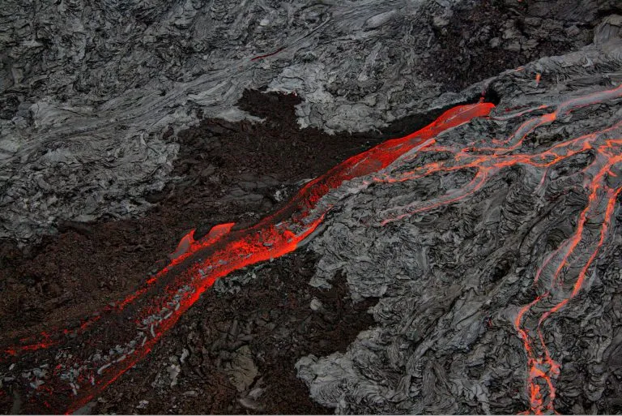
4.1Classifying igneous rocks
Igneous rocks are classified by two things. Texture describes the physical characteristics of the minerals, such as grain size, and records the magma's cooling history. Composition is the rock's mineralogy and chemistry. Cooling history can also change composition (Section 4.4).
4.1.1 Texture
- Coarse-grained. Magma that cools slowly deep in the crust makes an () rock. Crystals have time to grow large and are readily visible: a texture, as in granite.
- Fine-grained. Lava extruded onto the surface, or intruded into shallow fissures, cools quickly into an () rock. Grains are too small to see with the unaided eye () and need a petrographic microscope, as in basalt.
- No crystals. Lava that cools extremely fast forms non-crystalline , which is not a mineral. It is common in volcanic ash and in , which shows conchoidal fracture like quartz (Unit 3).
Some rocks mix the two grain sizes. In a texture, large crystals called sit in a fine-grained (matrix). This records a multi-stage cooling history: slow cooling deep underground, then faster cooling after the magma rose to a shallower depth or the surface.
Residual melt expelled from an intrusion can form veins or masses of very large crystals of feldspar, quartz, beryl, tourmaline, and mica. This texture means very slow crystallization; a rock made mostly of it is a . Pegmatitic muscovite sheets were large enough to be used as windows in the Middle Ages.
All magmas contain dissolved gases called . As magma rises, falling pressure lets them bubble out of solution, like the fizz in an opened soda. Bubbles trapped in the solidifying lava give a texture, and the holes are . Volcanic rock with common vesicles is . When volatile-rich lava is quenched very quickly it becomes a meringue-like glass froth, , which can be light enough to float.
Explosive eruptions throw lava, rock, ash, and gas into the air. The solid parts, , settle and cool into rocks with a texture ("pyro" = fire, "clastic" = rock fragments): a chaotic mix of crystals, angular glass shards, and rock fragments. Tephra is named by size: (< 2 mm), (2–64 mm), and or blocks (> 64 mm). Rock made from large tephra deposits is ; if the fragments pile up while still hot and fuse, it is .
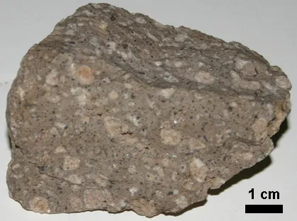
Porphyriticandesite Pegmatiticpegmatite
Pegmatiticpegmatite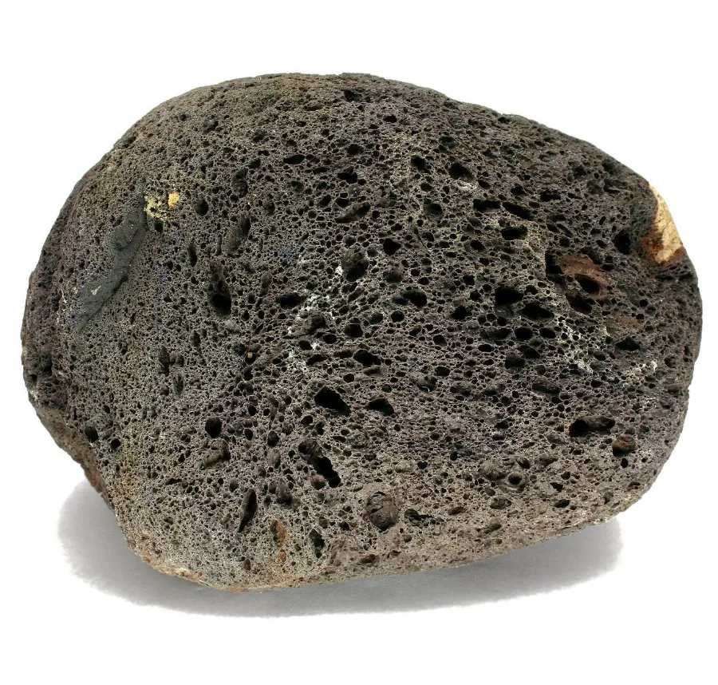
Vesicularscoria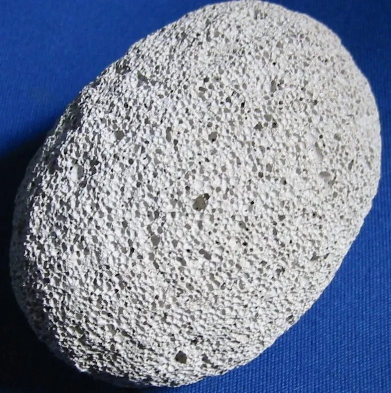
Frothy glasspumice Glassyobsidian
Glassyobsidian Pyroclasticwelded tuff
Pyroclasticwelded tuff
| Texture | What you see | Cooling history |
|---|---|---|
| Phaneritic | Coarse, visible crystals | Slow, deep underground (intrusive) |
| Aphanitic | Crystals too small to see | Fast, at or near the surface (extrusive) |
| Porphyritic | Phenocrysts in a fine groundmass | Two stages: slow at depth, then fast |
| Pegmatitic | Very large crystals | Very slow, from residual melt |
| Glassy | No crystals | Extremely fast (quenched) |
| Vesicular | Gas holes (vesicles) | Gas escaping as lava solidifies |
| Pyroclastic | Crystals, glass shards, rock fragments | Tephra from an explosive eruption |
4.1.2 Composition
Composition is divided into four groups that differ in their amounts of silica, iron, and magnesium. In nature these groups have no sharp boundaries; they lie on a continuous spectrum, and rock names such as granite have exact mineral definitions (rocks sold as "granite" may really be syenite, tonalite, or monzonite). The four groups below are a simplified scheme adequate for an introductory course.
| Group | Silica | Main minerals | Color | Intrusive | Extrusive |
|---|---|---|---|---|---|
| 65–75% | Feldspar, quartz; minor amphibole, biotite | Light | Granite | Rhyolite | |
| 55–60% | Plagioclase, amphibole (about equal light and dark) | Medium | Diorite | Andesite | |
| 45–50% | Pyroxene, olivine, plagioclase | Dark | Gabbro | Basalt | |
| ≤ 40% | Mostly olivine, some pyroxene | Very dark / green | Peridotite | Komatiite |
Felsic rocks are dominated by light-colored feldspar and silica (quartz) and are poor in iron and magnesium. Intermediate rocks lie between. Mafic rocks are rich in ferromagnesian minerals (Mg and Fe) plus plagioclase. Ultramafic rocks are rare at the surface but form , the rock of the upper mantle. Dacite and granodiorite sit between felsic and intermediate. is rare because lava straight from the mantle is uncommon; examples occur in ancient Archean rocks.
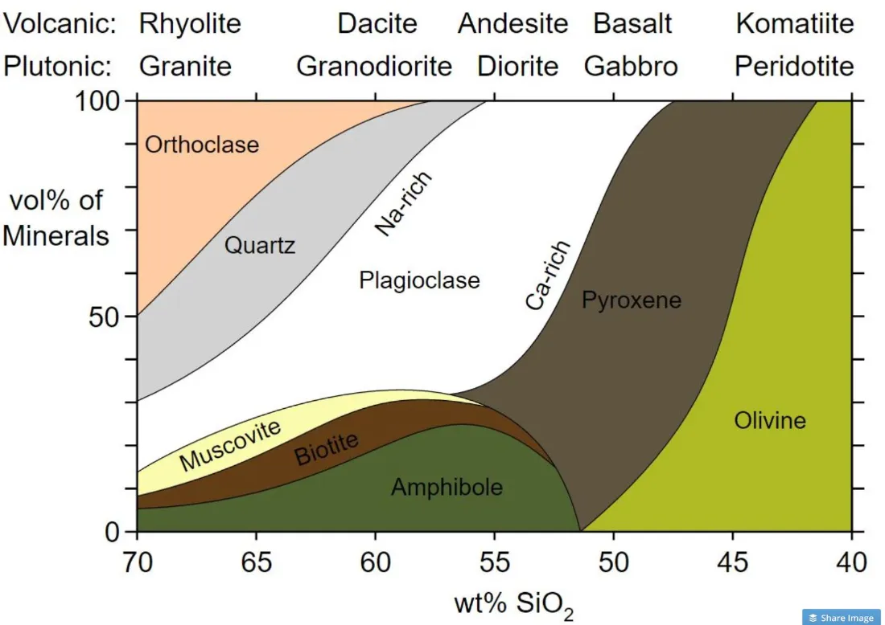
 Granitefelsic · coarse
Granitefelsic · coarse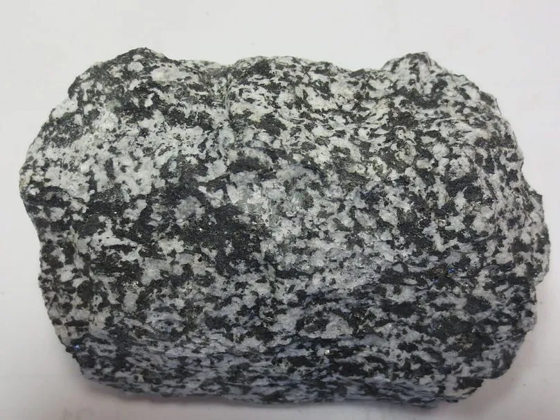
Dioriteintermediate · coarse Gabbromafic · coarse
Gabbromafic · coarse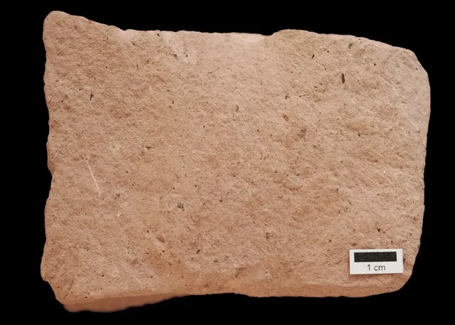
Rhyolitefelsic · fine Andesiteintermediate · fine
Andesiteintermediate · fine Basaltmafic · fine (vesicular)
Basaltmafic · fine (vesicular)
- Granite: coarse felsic intrusive rock. Quartz is a good indicator; it often has salmon-pink potassium feldspar and white plagioclase. A good approximation of continental crust in density and composition.
- Rhyolite: fine felsic extrusive rock, often pink with glassy quartz phenocrysts. Less common than granite because felsic lava is less mobile. Examples: Yellowstone lava flows and the altered rhyolite of the Grand Canyon of the Yellowstone.
- Diorite: coarse intermediate intrusive rock with a "Dalmatian" look of black hornblende and biotite on white plagioclase. Found in the Andes and Utah's Henry and Abajo mountains.
- Andesite: fine intermediate extrusive rock, commonly grey and porphyritic; found in the Andes and some island arcs (Unit 2).
- Gabbro: coarse mafic intrusive rock, mainly pyroxene with minor plagioclase; a major part of the lower oceanic crust.
- Basalt: fine mafic extrusive rock, often vesicular, with olivine or plagioclase phenocrysts when porphyritic. Formed at mid-ocean ridges, it makes up the entire ocean floor (under the sediment) and is the most common rock on Earth's surface.
4.1.3 Igneous rock bodies
Surprisingly, intrusive rocks are more common in the geologic record. Extrusive rocks, with small crystals and glass, are less durable and are exposed to erosion right away, while intrusive rocks form underground with larger, stronger crystals. So most igneous landforms are intrusive bodies; active volcanoes are the main exception. The surrounding, older rock that magma intrudes into is the .
- A (dyke) forms when magma fills a crack and solidifies. It cuts across layers, usually vertically or at an angle, so it is a intrusion. A dike is younger than the rocks it cuts, so dating it helps put numeric ages on sedimentary sequences (Unit 7).
- A forms when magma squeezes between layers and shoulders them apart. It runs parallel to the layers, so it is a intrusion; it is also younger than the surrounding layers.
- A is a large underground reservoir of molten rock. The path of rising magma is a . How diapirs make room is still debated: the country rock may be shouldered aside, or melted and absorbed, or broken into pieces that sink into the magma (); or "diapirs" may really be many dikes merged over millions of years.
- A cooled diapir becomes a , often roughly round. Many merged plutons form a : typically over 100 km² in area, tied to subduction zones, mostly felsic, and found in the cores of mountain ranges such as the Sierra Nevada. A is a pluton with less surface exposure, possibly a narrower neck rising from a batholith. Batholiths and stocks are discordant.
- A is a blister-like concordant intrusion that bulges the layers above it upward, like Utah's Henry Mountains. A similar body that bulges downward is a .
| Body | Shape | Relation to layers | Example |
|---|---|---|---|
| Dike | Sheet filling a crack | Discordant (cuts across) | Olivine gabbro dike, Baffin Island |
| Sill | Sheet between layers | Concordant (parallel) | Horton Bluff, Nova Scotia |
| Laccolith | Upward blister | Concordant | Henry Mountains, Utah |
| Lopolith | Downward bulge | Concordant | – |
| Stock | Small pluton, limited exposure | Discordant | Little Cottonwood Stock, Utah |
| Batholith | Many merged plutons, > 100 km² | Discordant | Sierra Nevada batholith (Yosemite) |
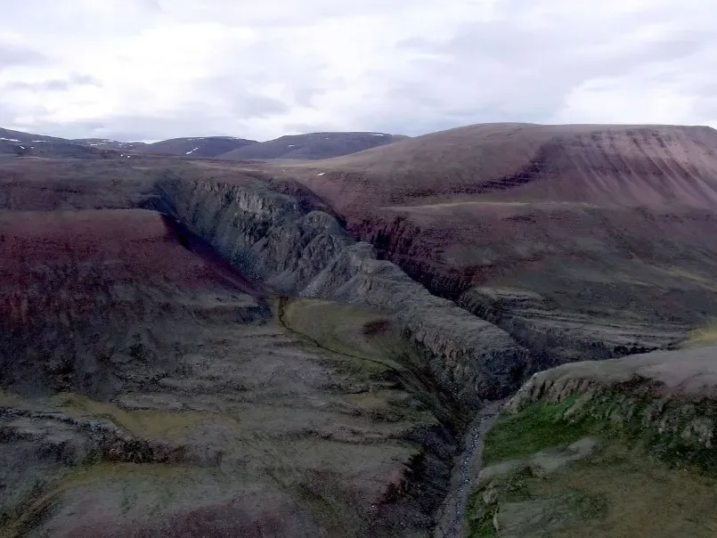


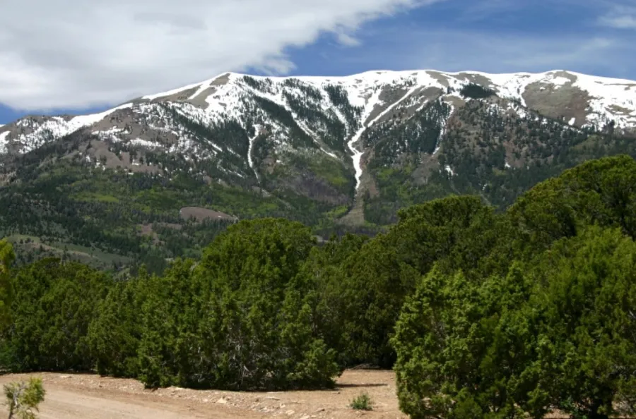
Check yourself: Section 4.1 quiz in the textbook ↗
4.2Bowen's Reaction Series
describes the temperatures at which minerals crystallize as magma cools, or melt as rock is heated. At sea-level pressure (1 bar), all minerals are solid below about 700 °C (1,292 °F) and all are molten above about 1,250 °C (2,282 °F). At depth the numbers change because pressure affects melting points (Section 4.3), but the order stays the same.
Read the diagram from top to bottom as cooling. The rock groups on the right run from ultramafic to felsic. Going down, silica, sodium, aluminum, and potassium increase; going up, the ferromagnesian components iron, magnesium, and calcium increase.
Bowen's experiments
Norman L. Bowen (1887–1956) noticed that certain minerals always occur together in igneous rocks and exclude others. Suspecting cooling temperature was the reason, he ground rocks to powder, sealed them in metal capsules, heated them to different temperatures, and quenched them. Under a petrographic microscope he found crystals in glass, and learned that minerals crystallize at different temperatures and occur with others from a similar range.
This explains why mafic rocks crystallize at higher temperatures than felsic ones: felsic lavas erupt hundreds of degrees cooler than mafic lavas. His work founded modern igneous and led to his book The Evolution of the Igneous Rocks (1928).
Check yourself: Section 4.2 quiz in the textbook ↗
4.3Magma generation
Magma and lava have three components: the melt (ions from liquefied minerals), solids (crystals floating in the melt), and volatiles (dissolved gases such as water vapor, carbon dioxide, sulfur, and chlorine). How much of each is present controls how the magma behaves.
4.3.1 Geothermal gradient
Temperature rises with depth because of heat left over from Earth's formation and ongoing radioactive decay. The rate of increase is the (geotherm): about 25 °C per km in the upper 100 km. It reaches about 1,200 °C at 100 km depth. Pressure rises too: about 10,000 bars at the base of the crust (35 km), where 1 is normal sea-level air pressure.
On a depth-temperature graph, the marks where rock begins to melt. Rock on the cool side is solid; rock that crosses it starts to melt. The solidus slopes because higher pressure raises the melting temperature (in the same way, water boils below 100 °C when pressure is lowered). Normally the geotherm stays on the solid side all the way to the core–mantle boundary at 2,880 km; the two lines come closest at about 125 km. Because magma is a mix of minerals with different melting points (Section 4.2), the solidus is really a fuzzy zone where some minerals melt and others stay solid: .
| Type | What changes | Setting | Graph |
|---|---|---|---|
| Decompression melting | Pressure drops as hot rock rises | Mid-ocean ridges, continental rifts | B |
| Flux melting | Volatiles (water) lower the melting point | Subduction zones, island arcs | D |
| Heat-induced melting | Temperature rises (least common) | Mantle plumes / hotspots (with some decompression) | C |
4.3.2 Decompression melting
makes magma at mid-ocean ridges. Convection makes the solid asthenosphere flow slowly beneath the lithosphere. Where mantle rock rises, it keeps roughly its temperature but the pressure falls, lowering its melting point. The rock crosses the solidus (graph B) and partial melting begins. The magma rises, cools, and crystallizes into new lithosphere.
4.3.3 Flux melting
(fluid-induced melting) happens in subduction zones and island arcs and feeds many volcanoes of the circum-Pacific . The subducting slab holds hydrated minerals (water bonded into silicate structures, Unit 2). As it heats up in the mantle, they release water vapor and other volatiles, squeezed out like water from a sponge. The volatiles dissolve into the overlying asthenosphere and lower its melting point. Pressure and temperature do not change; the solidus moves (graph D). It works like salt on an icy road, which lowers the freezing point so the ice melts.
4.3.4 Heat-induced melting
, simply adding heat, is the least common way to make magma. It occurs at (hotspots): rock around the plume is heated past the solidus (graph C), and because plume material is rising, some decompression melting occurs too. Intense regional metamorphism (Unit 6) can also make a little magma, producing a hybrid metamorphic–igneous rock called .
Check yourself: Section 4.3 quiz in the textbook ↗
4.4Partial melting and crystallization
All magmas come from similar mantle rock, yet igneous rocks vary widely. Partial melting and crystallization processes change the magma's chemistry along the way.
4.4.1 Partial melting
The mantle is made of many minerals, so it does not melt uniformly: low-melting-point minerals turn liquid while high-melting-point ones stay solid. This partial melting makes magma with a different composition from its source.
- From the mantle. Mantle peridotite is ultramafic: low in silica, high in iron and magnesium. Its silica-rich portions melt first, so ultramafic mantle yields mafic magma (and mafic source rock yields intermediate magma). The magma rises because it is more buoyant than the mantle.
- From the crust. Heat from magma can melt existing crustal rock, giving magma more felsic than the original rock. Early in Earth's history, such silica-rich magmas rose and solidified into granitic continents; their old cores are the .

4.4.2 Crystallization and magmatic differentiation
Liquid magma is less dense than the solid rock around it, so it rises. As it cools and crystallizes, changes its chemistry toward a more felsic composition, mainly through two processes.
1. Assimilation. In , pieces of country rock, often more felsic, are added to the magma and may melt into it. Pieces that stay unmelted are . Xenoliths also form during (two magmas meeting, sometimes staying uneven) and (a solidified body being remelted). Continental crust is felsic and thick, so mafic magma rises through it slowly, assimilating felsic rock and arriving as intermediate or felsic magma. That is why felsic magmas are much more common within continents.

2. Fractionation. In (fractionation), minerals crystallize as the magma cools and settle to the floor of the chamber, removing their ions from the melt. Olivine, at the top of Bowen's series, crystallizes first and has less silica than other common igneous minerals, so removing it leaves the melt richer in silica. Next come pyroxene and plagioclase, making the melt still more felsic. Fractionation happens in oceanic lithosphere too, but highly evolved felsic magmas form mostly in continents, where the longer trip to the surface allows more of it.
Check yourself: Section 4.4 quiz in the textbook ↗
4.5Volcanism
A is a landform created when lava solidifies into rock. Plate tectonics has made volcanoes far less mysterious; this section covers where they are, their types, their hazards, and how they are monitored.
4.5.1 Distribution and tectonics
Most volcanoes are ("inter" = between), on active plate boundaries: mid-ocean ridges, subduction zones, and continental rifts. ("intra" = within) lie inside plates, far from boundaries; many form over hotspots.
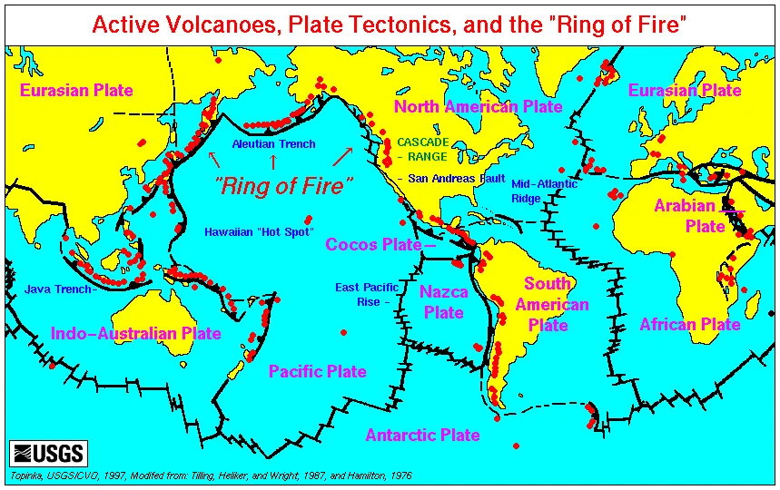
| Setting | Type | Melting | Magma | Examples |
|---|---|---|---|---|
| Mid-ocean ridge | Interplate | Decompression | Basaltic | Ocean floor, Iceland |
| Subduction zone | Interplate | Flux, then differentiation | Intermediate to felsic | Ring of Fire |
| Continental rift / thinning crust | Interplate | Decompression | Basaltic | East African Rift, Basin and Range |
| Hotspot | Intraplate | Heat + decompression | Basaltic in oceans; can turn intermediate or felsic under continents | Hawaii, Yellowstone |
Mid-ocean ridges
Most volcanism on Earth happens along mid-ocean ridges, a type of divergent boundary (Unit 2). These eruptions are the least observed: most lie under 3,000–4,500 m of water and are slow, gentle, and oozing (Iceland is the exception). Thinning plates let hot mantle rise and decompress; peridotite partially melts into basaltic magma. So nearly all seafloor volcanoes are basaltic, and oceanic lithosphere is basalt near the surface with gabbro and peridotite beneath. Underwater, basalt erupts in small explosions or as rounded .
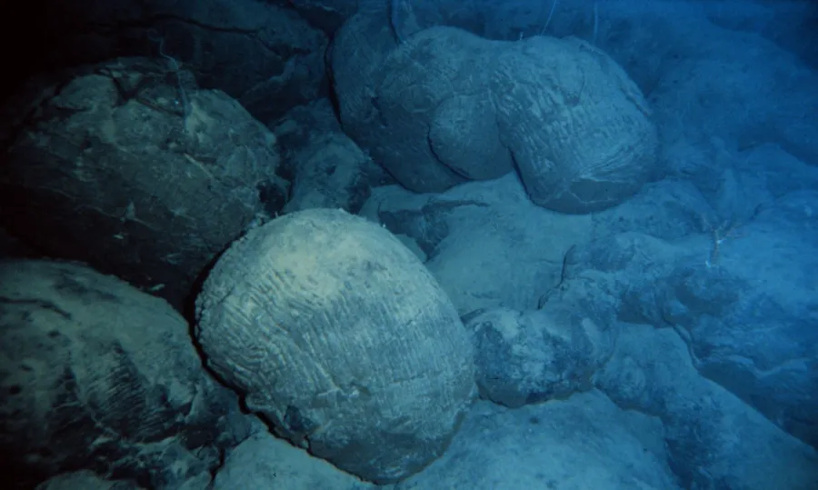

Life without sunlight
Seafloor eruptions support whole ecosystems. They gather around black smokers, deep-sea : tall vents emitting black, hot, mineral-rich water.
With no sunlight for photosynthesis, these communities rely on : bacteria turn hydrogen sulfide (H2S, which smells like rotten eggs) into nutrients and water. Larger animals eat the bacteria or host them inside their bodies.
Subduction zones
The second most common setting is next to subduction zones, a type of convergent boundary. Water from the descending slab causes flux melting; in the volcanic arc, thickened crust promotes partial melting and differentiation, evolving the mafic mantle magma into silica-rich magma. The Ring of Fire is dominated by mostly silica-rich eruptions, and its volcanoes and plutons are largely intermediate to felsic rock such as andesite, rhyolite, pumice, and tuff.
Continental rifts
Volcanoes also form at continental rifts, where diverging plates thin the crust (East African Rift), and where crust thins without rifting, as in North America's Basin and Range. Lower crust or upper mantle rises through the thin crust, decompresses, partially melts, and erupts as basaltic lava, usually as flood basalts, cinder cones, and lava flows. Utah's Black Rock Desert Volcanic Field began erupting about 6 million years ago; its last eruption was 720 years ago.
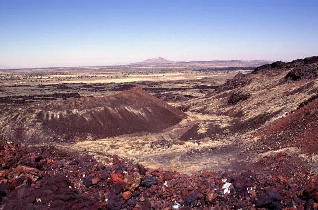
Hotspots
are the main source of intraplate volcanism. A plate glides over a mantle plume, a rising column of hot solid rock from deep in the mantle. Rising material melts, and where the magma meets the lithosphere it spreads into a mushroom-shaped head tens to hundreds of kilometers across. Most plumes lie under oceanic plates, so volcanoes start underwater and can build islands, like Hawaii. Under a continent, the hot mafic magma can melt felsic crust and mix to make intermediate magma, or the felsic magma can rise to form a granitic batholith or an explosive felsic volcano, like Yellowstone.
An active volcano at one end of a chain of extinct ones marks a hotspot: the plate has carried older volcanoes away. The Hawaiian Islands are the active end of the Hawaii–Emperor chain, which reaches the subduction zone off Kamchatka; the North American plate's motion left a line of calderas from southwestern Idaho to Yellowstone. See Unit 2, Section 2.7 for the maps.
4.5.2 Volcano features and types
Volcanoes are classified by shape, eruption style, magma composition, and more. Their main parts are shown below, using a stratovolcano.
- The is the narrow pipe that carries magma from the chamber to the ; the bowl at the top is the , bordered by its rim.
- A is a small volcano on the flank of a larger one, such as Shastina on Mount Shasta. Kīlauea, on the flank of Mauna Loa, is not one, because it has its own magma chamber.
- The largest craters are , such as Crater Lake, Oregon.
Viscosity is the key
Many volcanic features depend on , a fluid's resistance to flowing. Low-viscosity magma flows easily, like syrup: the basaltic lava of Hawaii's shield volcanoes. High-viscosity magma, typically felsic or intermediate, is thick and sticky and flows slowly, like toothpaste. More silica and lower temperature mean higher viscosity, which traps gas and makes eruptions more explosive.
| Type | Shape | Magma | Eruption style | Examples |
|---|---|---|---|---|
| Shield | Largest; broad, low-angle flanks | Mafic (basalt), low viscosity | Effusive: small, local, predictable | Mauna Loa, Kīlauea, Olympus Mons |
| Stratovolcano (composite) | Steep, symmetrical cone; distinct crater | Intermediate to felsic (sometimes mafic) | Viscous flows and domes, explosive eruptions | Mt Rainier, Mt Fuji |
| Lava dome | Blocky mound near a vent | Felsic (rhyolite, obsidian), very viscous | Grows by internal expansion | Mt St. Helens dome, Chaitén, Mammoth Mtn |
| Caldera | Steep-walled basin, up to 25 km wide | Felsic, high volatiles | Huge explosive eruption, then collapse | Crater Lake, Yellowstone, Long Valley |
| Cinder cone | Small, steep, central vent | Mafic, high volatiles | Short-lived; cinders then lava from base | Sunset Crater, Parícutin |
| Flood basalt | Vast lava plateaus | Mafic, lowest viscosity | Never observed in human history | Columbia River, Deccan, Siberian Traps |
| Carbonatite | – | Carbonate (> 50% carbonate minerals), low viscosity, cool | Black lava that weathers white | Ol Doinyo Lengai (only active one) |
Shield volcanoes
are the largest volcanoes. Their broad, low-angle flanks, named for their resemblance to a warrior's shield, are built from many low-viscosity basaltic flows that spread far. They have small summit vents and mafic magma chambers, are linked to hotspots, mid-ocean ridges, or rifts, and erupt : small, localized, predictable eruptions. They are rarely a threat to life, though Kīlauea's non-explosive 2018 eruption produced unusually large flows that damaged roads and buildings. Shields are also found in Iceland, the Galápagos, Northern California, Oregon, and the East African Rift.
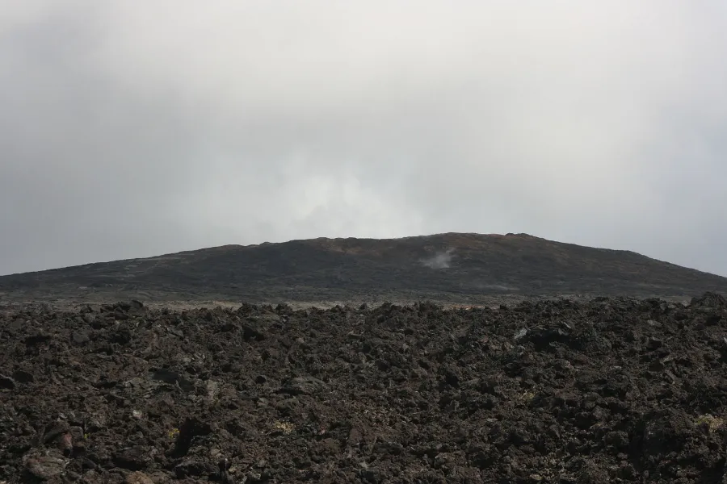
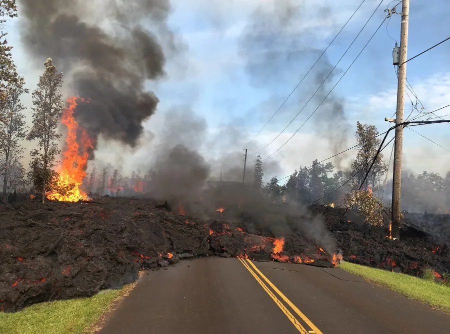

Basaltic lava forms two main flow types, both with Hawaiian names. may come from low-viscosity lava that flows easily into ropy strands. ("ah-ah") is more viscous and crumbly and blocky; felsic lavas, cooler and richer in silica, also form ʻaʻā-style flows. Exactly what makes each type is still debated.
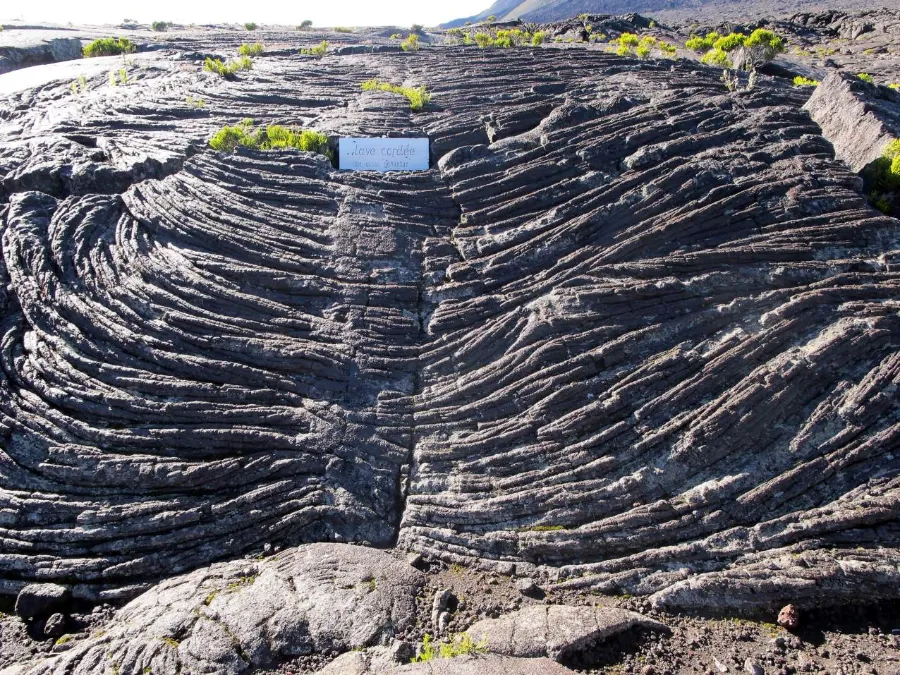

Fast, low-viscosity lava can harden on the outside and keep flowing inside; when the flow drains, the empty shell is a . Lava tubes, with or without collapsed roofs, form caves in Hawaii, Northern California, the Columbia River Plateau, El Malpais (New Mexico), and Craters of the Moon (Idaho). are cracks, common in shield-style eruptions, that release very fluid mafic lava; some are caused by volcanic earthquakes, and some follow plate boundaries, as in Iceland.
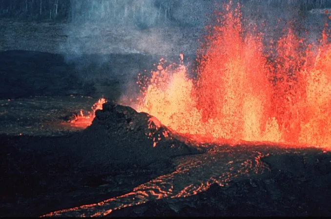
Cooling lava can contract into columns with roughly hexagonal cross sections, called . Famous examples are Devils Tower, Wyoming (possibly an ancient volcanic vent exposed by erosion) and the Giant's Causeway, Ireland.
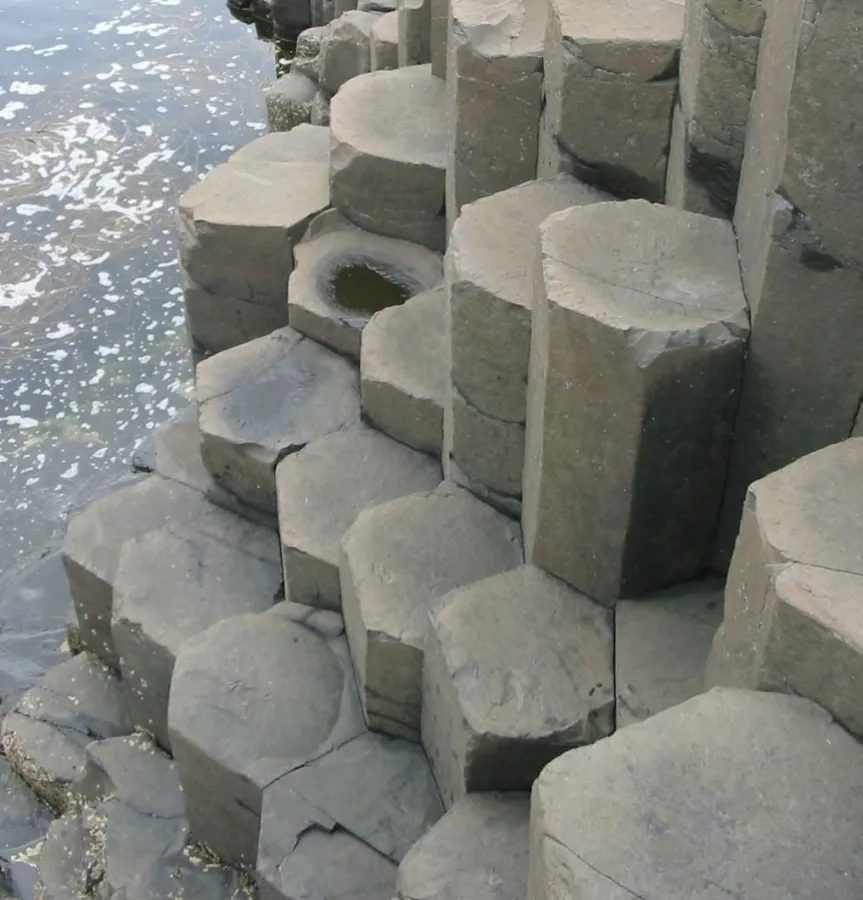
Stratovolcanoes
A (composite cone) has steep flanks, a symmetrical cone, a distinct crater, and rises high above its surroundings. "Composite" refers to its alternating layers of pyroclastic fragments (ash, bombs) and solidified lava of varying composition. Stratovolcanoes usually have felsic to intermediate magma chambers (sometimes mafic lavas); viscous flows and domes punctuated by explosive eruptions build the steep flanks.

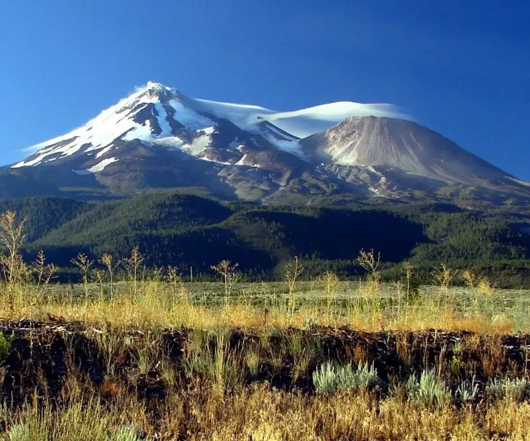
Lava domes
are piles of silica-rich rock such as rhyolite and obsidian. The felsic lava is too viscous to flow far, so it heaps up near the vent in blocky masses and grows by internal expansion; the outside cools, hardens, shatters, and sheds fragments down the sides. Domes often grow inside the collapsed crater of a stratovolcano, as at Mount St. Helens; Chaitén (Chile) and Mammoth Mountain (California) are stand-alone domes.

Calderas
A caldera is a steep-walled, basin-shaped depression formed when a volcano collapses into its emptied magma chamber. Calderas are usually very large (the chapter says up to 25 km across). The term refers to a vent, but it is often used as a volcano type. Caldera volcanoes are typically formed by eruptions of high-viscosity felsic lava with a high volatile content.

Three caldera examples
- Crater Lake, Oregon. Mount Mazama, a composite volcano, erupted in a huge explosive blast, ejecting ash and draining its magma chamber; the top collapsed into a basin that later filled with water. Wizard Island is a later resurgent lava dome.
- Yellowstone. Huge eruptions 2.1, 1.3, and 0.64 million years ago left three calderas, rhyolite flows, and tuff. The youngest caldera holds most of the park and two resurgent domes. The hotspot track began about 17 million years ago near the Oregon–Nevada border and crossed Idaho's Snake River Plain.
- Long Valley, California. A large eruption 760,000 years ago spread ash across the U.S. and formed the Bishop Tuff. The caldera is 17 × 32 km, big enough for the town of Mammoth Lakes and a ski resort.
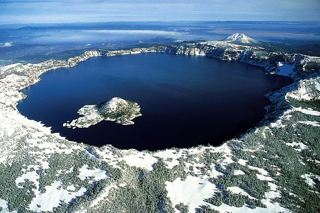
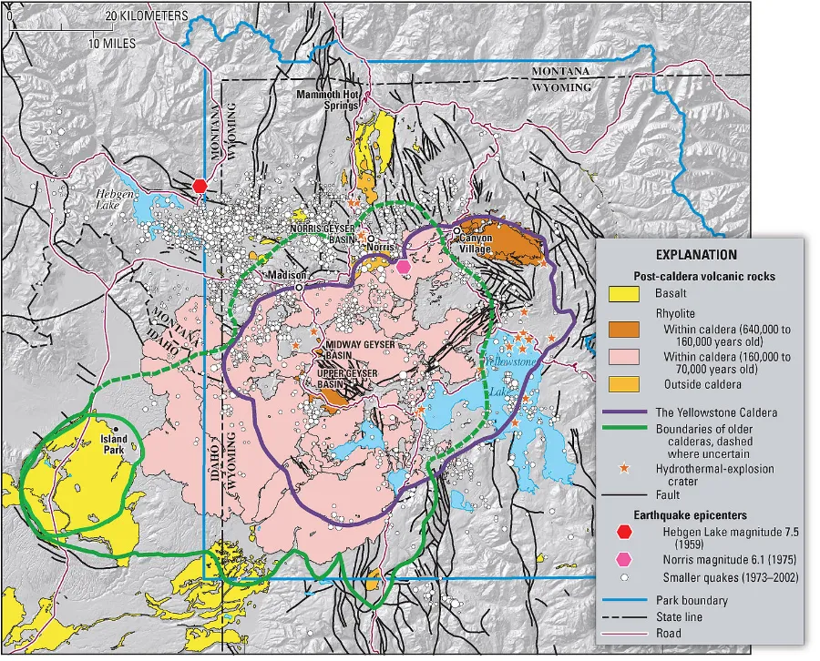
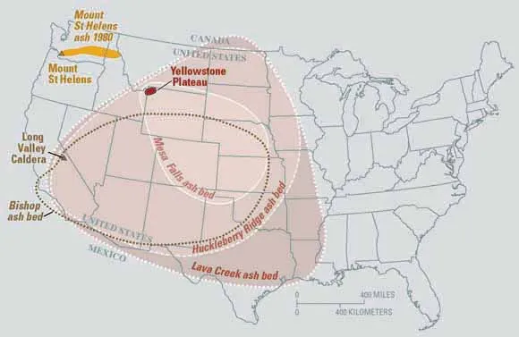
Cinder cones
are small, steep volcanoes built of pyroclastic fragments thrown from a central vent. Small fragments are ; the largest are volcanic bombs. Eruptions are short-lived, usually of mafic, volatile-rich lava that solidifies in the air and piles up on the flanks. They are common across western North America.

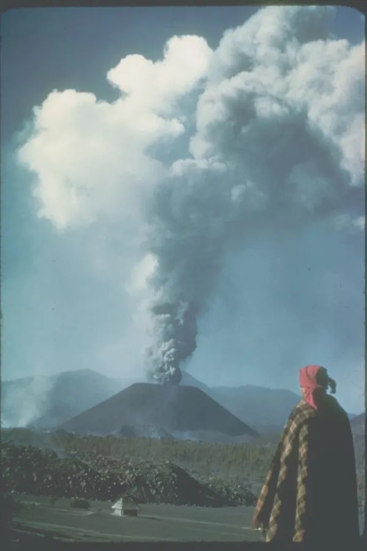
Parícutin, Mexico (1943)
A cinder cone began shooting cinders out of a farmer's field. It grew to over 90 m (300 ft) in a week and 365 m (1,200 ft) in 8 months. Over nine years, ash covered about 260 km² and the town of San Juan was destroyed.
Typical cinder-cone sequence:
- Violent eruption of gas and cinders.
- Cone and crater build up.
- Low-viscosity lava pours out near the base, because the loose cone cannot hold a column of lava up to the crater.
Flood basalts
are among the largest and lowest-viscosity eruptions known, but none has happened in human history, so how they erupt is still unclear. Examples: the Columbia River basalts (Washington, Oregon, Idaho), the Deccan Traps of India, and the Siberian Traps, possibly involved in Earth's largest mass extinction (Unit 8).

Carbonatites
The most unusual volcanism is . All other volcanism comes from silicate magma; carbonatites come from carbonate magma and form rocks with more than 50% carbonate minerals. The lava is very low in viscosity and relatively cool, erupts black, and turns brown-grey and finally white. The only active example is Ol Doinyo Lengai in Tanzania's East African Rift. Carbonatites are mostly tied to continental rifting, and old ones must be studied carefully to tell them from metamorphic marble (Unit 6).
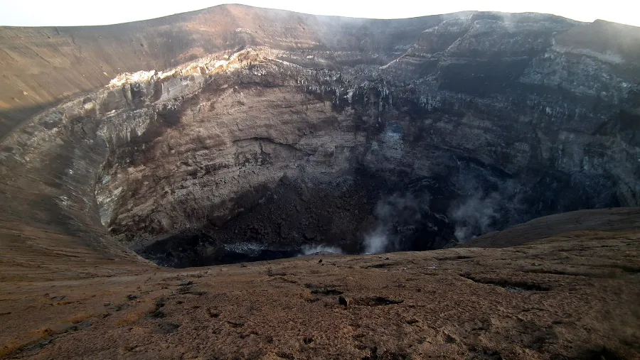
4.5.3 Volcanic hazards and monitoring
Lava is the most obvious hazard, but the dangers go far beyond lava flows.

Hazards in this section
- Pyroclastic flows (most dangerous)
- Landslides and landslide-generated tsunamis
- Tephra and ash fall
- Volcanic gases, including limnic eruptions
- Lahars (volcanic mudflows)
- Lava flows
Mount St. Helens, May 18, 1980. An earthquake set off a landslide that "uncorked" the mountain, removing its upper 400 m (1,300 ft). A lateral blast followed, and a pyroclastic flow moving 80–130 km/h covered nearly 600 km² of forest with hot ash and debris, flattening trees. The eruption killed 57 people.
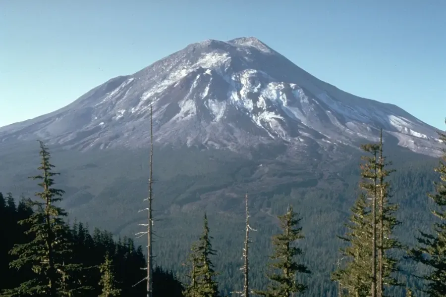
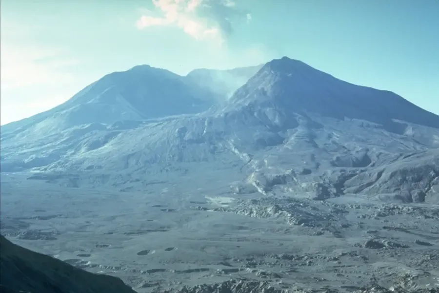
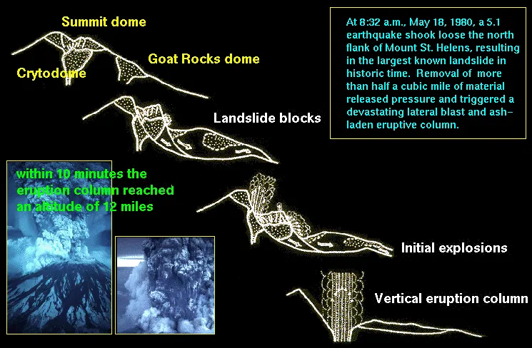
Vesuvius, 79 CE. Mount Vesuvius near Naples, Italy, sent a pyroclastic flow over the Roman cities of Herculaneum and Pompeii, rediscovered in the 18th century. Pompeii preserves casts of people suffocated by ash and buried under about 3 m (10 ft) of ash, pumice lapilli, and collapsed roofs.
Pyroclastic flows
are the most dangerous volcanic hazard: turbulent clouds of lava blocks, pumice, ash, and hot gas at 200–700 °C that race down steep flanks at up to 193 km/h (120 mph). They are typical of explosive, silica-rich, high-viscosity volcanoes such as composite cones, and their deposits form tuff and welded tuff.
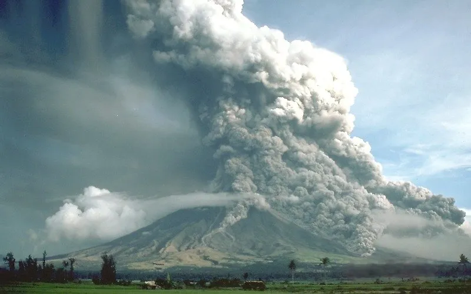

Deadly pyroclastic flows (from the chapter)
- 1902, Mount Pelée, Martinique: destroyed St. Pierre, killing 28,000 people in moments.
- Early 1990s, Mount Unzen, Japan: repeated flows; one filmed flow killed 41 people.
- 2014, Mount Ontake, Japan: magma heated groundwater to steam, which blasted out ash and volcanic bombs; 47 killed by toxic gas, hot ash, or bombs.
See the fact-check notes for updated death tolls.
Landslides and tsunamis
Steep, unstable flanks can fail in landslides triggered by magma movement, explosions, large earthquakes, or heavy rain. The 1980 Mount St. Helens landslide moved at 160–290 km/h (100–180 mph). Landslides that reach the sea can cause tsunamis: in 1792 a landslide from Mount Unzen generated a tsunami that killed 15,000 people; the 1883 Krakatau eruption in Indonesia raised waves 40 m (131 ft) high that killed 36,000 people and destroyed 165 villages.
Tephra
Volcanoes, especially composite ones, eject large amounts of tephra. Larger, heavier pieces fall near the vent (blocks and bombs killed people at Ontake), while fine ash (< 2 mm) travels far. Heavy ash can collapse buildings; breathing it can cause lung disease such as ; and it destroys aircraft and car engines. In 2010 the ash cloud from Eyjafjallajökull, Iceland, caused northern Europe's largest air-travel disruption since World War II, costing the world economy billions of dollars, though no one was hurt.

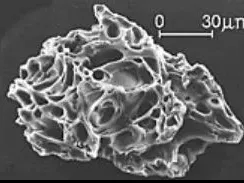
Volcanic gases
As magma rises and pressure falls, dissolved gases escape: carbon dioxide (CO2), sulfur dioxide (SO2), hydrogen sulfide (H2S), and hydrogen halides (HF, HCl, HBr). Even volcanoes that are not erupting may emit them. Colorless, odorless CO2 sinks and collects in low spots: in 2006, three ski patrol members died of suffocation after falling into a snow depression near a at Mammoth Mountain, inside the Long Valley Caldera.
Limnic eruptions
A (Greek limne, lake) is a sudden release of gas from a crater lake supercharged with dissolved gas, triggered when a landslide or earthquake jolts the water, like opening a shaken soda. In 1986 at Lake Nyos, Cameroon, a massive release of CO2 killed almost 2,000 people.
Lahars
A (an Indonesian word) is a volcanic mudflow that forms from rapidly melting snow or glaciers: a slurry like wet concrete of water, ash, rock, and debris. Lahars can reach 80 km/h (50 mph) on steep slopes. In 1985 a lahar from Nevado del Ruiz, Colombia, buried the town of Armero and killed about 23,000 people.

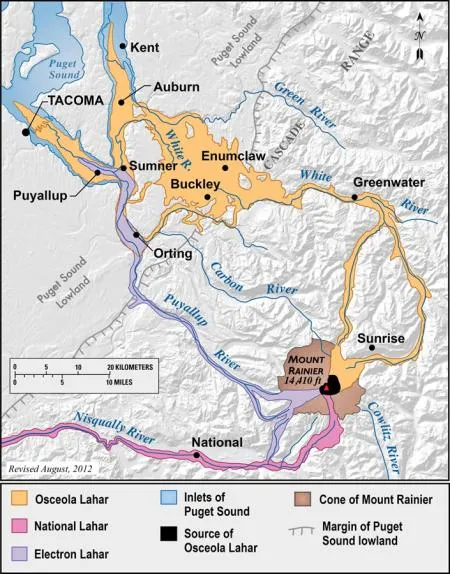
Living on old lahars
Several cities, including Tacoma, are built on prehistoric lahar deposits that stretch for many kilometers across the flood plains around Mount Rainier. Mount Baker, Washington, has a similar lahar hazard.
Monitoring
Geologists watch for signs that an eruption is coming with three main methods:
| Hazard | What it is | Example (deaths, per chapter) |
|---|---|---|
| Pyroclastic flow | Hot (200–700 °C) cloud of ash, pumice, blocks, and gas; up to 193 km/h | Pelée 1902 (28,000); Vesuvius 79 CE |
| Landslide / tsunami | Collapse of steep flanks; waves if it reaches the sea | Unzen 1792 (15,000); Krakatau 1883 (36,000) |
| Tephra / ash | Ejected fragments; ash < 2 mm travels far | Eyjafjallajökull 2010 (air travel halted) |
| Gases | CO2, SO2, H2S, HF, HCl, HBr; limnic eruptions | Lake Nyos 1986 (almost 2,000); Mammoth Mtn 2006 (3) |
| Lahar | Mudflow from melted snow or ice plus ash; up to 80 km/h | Nevado del Ruiz 1985 (about 23,000) |
| Lava flow | Most obvious, usually slow | Kīlauea 2018 (property damage) |
Check yourself: Section 4.5 quiz in the textbook ↗
Summary
Igneous rock is either intrusive, solidified from magma underground, or extrusive, formed from lava erupted and cooled at the surface. Magma forms from mantle material in several plate tectonic settings by decompression melting, flux melting, or heat-induced melting. Its composition depends on the different melting temperatures of its minerals (Bowen's Reaction Series) and is changed by partial melting, magmatic differentiation, assimilation, and mixing. Volcanoes vary widely in shape and size and are classified by factors including magma composition and tectonic setting. Because volcanism seriously threatens people, geologists monitor volcanoes closely.
Quick recap
- Magma underground, lava at the surface. Slow cooling: coarse (phaneritic, intrusive). Fast: fine (aphanitic, extrusive). Very fast: glass. Two-stage: porphyritic.
- Gas gives vesicular rocks (scoria, pumice); explosive tephra gives pyroclastic rocks (tuff). Tephra: ash < 2 mm, lapilli 2–64 mm, bombs/blocks > 64 mm.
- Composition: felsic (granite/rhyolite) → intermediate (diorite/andesite) → mafic (gabbro/basalt) → ultramafic (peridotite/komatiite); silica falls, Fe and Mg rise.
- Bodies: dike (discordant), sill and laccolith (concordant), pluton, stock, batholith (> 100 km²).
- Bowen: olivine first (~1,250 °C), quartz last (~700 °C); plagioclase changes from Ca-rich to Na-rich.
- Geotherm ~25 °C/km. Melting: decompression (ridges, rifts), flux (subduction), heat-induced (hotspots).
- Differentiation makes magma more felsic: assimilation (xenoliths) and fractional crystallization.
- Viscosity rises with silica. Shield (mafic, effusive) → cinder cone → stratovolcano → lava dome → caldera (felsic, explosive).
- Hazards: pyroclastic flows (deadliest), landslides/tsunamis, ash, gases, lahars, lava. Monitor earthquakes, gas, and ground deformation.
Check yourself: Chapter 4 review quiz in the textbook ↗
Resources
Fact-check notes
Every statement in this guide was checked against the textbook chapter. Where the chapter differs from current references or contradicts itself, the guide keeps the chapter's value (that is what you will be tested on) unless noted, and lists the difference here.
| Topic | Chapter says | Note |
|---|---|---|
| Crater Lake age | "About 7700 years ago" (caption) and "about 6,800 years ago" (text) | The USGS dates Mount Mazama's climactic eruption to about 7,700 years ago (USGS); 6,800 is the older radiocarbon age, before calibration. The guide uses 7,700. |
| Mount Shasta | "Mt. Shasta in Washington state" | Mount Shasta is in Northern California. Corrected in the caption. |
| Mount Ontake 2014 | Pyroclastic flow; 47 killed | Final toll was 63 (58 dead, 5 missing). It was a phreatic (steam-driven) eruption (Smithsonian GVP; USGS), as the chapter's own description suggests. |
| Mount Unzen 1991 | Flow killed 41 people | The June 3, 1991 flow is usually reported to have killed 43, including volcanologists Katia and Maurice Krafft (Oregon State University). |
| Kīlauea 2018 caption | "High viscosity lava" | Kīlauea's lava is low-viscosity basalt, as the chapter's own text on shield volcanoes says. The guide leaves "high viscosity" out. |
| Silica ranges | Felsic 65–75%, intermediate 55–60%, mafic 45–50%, ultramafic ≤ 40% | The chapter's ranges leave gaps. Common references use continuous bounds, e.g. felsic > 63%, intermediate 52–63%, mafic 45–52%, ultramafic < 45% (Earle, Physical Geology, cited by the chapter). The table keeps the chapter's values. |
| Caldera size | "Diameters of up to 25 km" | The chapter's own examples are larger: Long Valley is 17 × 32 km, and Yellowstone's youngest caldera is about 30 × 45 miles, roughly 50 × 70 km (USGS). Treat 25 km as typical, not a maximum. |
| Chapter summary | Composition changed by "partial melting, magmatic differentiation, assimilation, and collision" | "Collision" is not described in the chapter; the body names magma mixing and rejuvenation. The guide's summary says mixing. |
| Typos | "Normal L. Bowen"; "Ariaka Sea"; "Kiluea"; "Bisho Tuff" | Corrected to Norman L. Bowen, Ariake Sea, Kīlauea, Bishop Tuff. |
The figure "Granite from Cape Cod" in the chapter uses a USGS photo whose source labels it quartz monzonite, a granite-like rock; the guide credits it that way. Bowen's Reaction Series branch names (discontinuous, continuous) were added from standard references; everything else in the figures comes from the chapter.
Credits
Content summarized from An Introduction to Geology, Chapter 4, © 2017 Chris Johnson, Matthew D. Affolter, Paul Inkenbrandt, and Cam Mosher, licensed CC BY-NC-SA 4.0. This guide is shared under the same license. Images are from the chapter and keep their own licenses, listed in each caption:
- CC BY / CC BY-SA: as credited in each figure caption.
- Public domain: U.S. government works (USGS, NASA, NOAA, National Park Service) and others as marked.
- Texture squares, intrusive bodies, Bowen's Reaction Series, melting graphs, fractional crystallization, stratovolcano, and volcano profiles: drawn for this guide from the chapter text and figures.